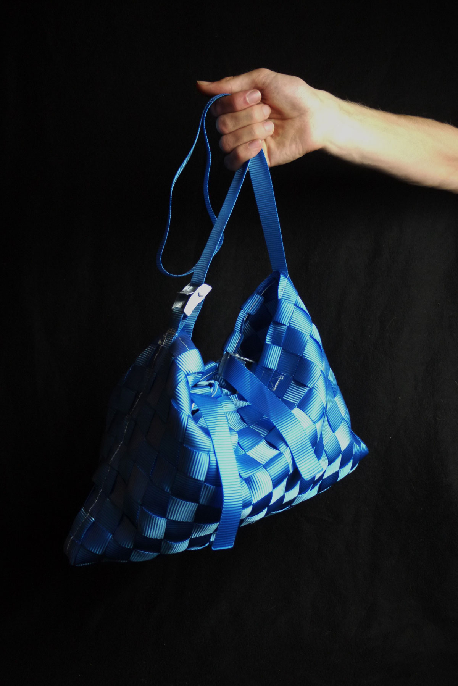
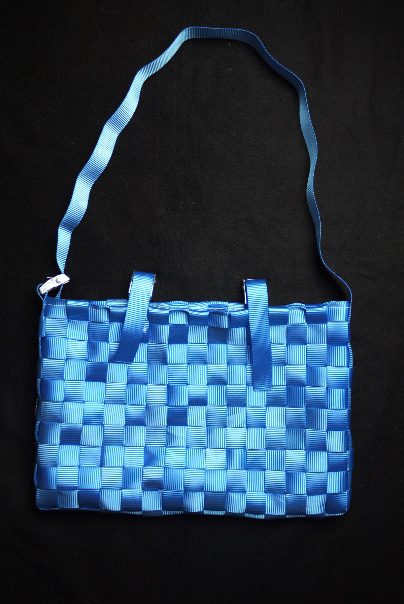
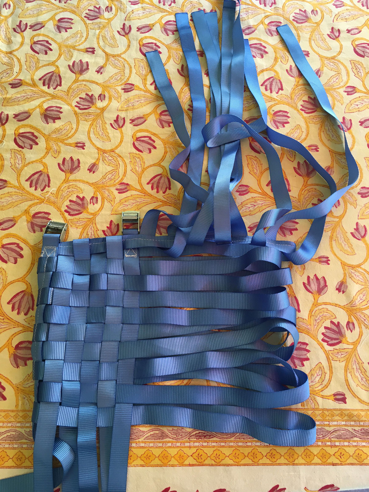
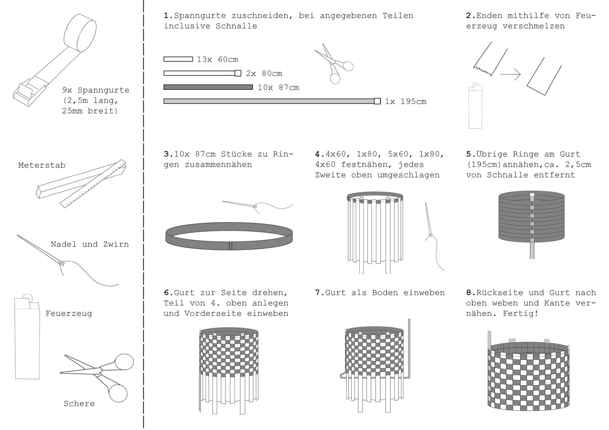

| Project name | Spanngurttragetasche |
|---|---|
| Year | 2025 |
| About | A bag woven out of tension straps. This is a DIY, a project meant to be built by anyone. You need tension straps, a needle and twine, scissors, a lighter and a folding ruler. Follow the instructions and sew it yourself! |